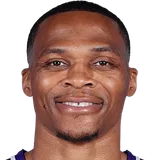

Isaiah Hartenstein
2018-19 to 2025-26 · Career Map
 Houston Rockets,
Houston Rockets,  Denver Nuggets,
Denver Nuggets,  Cleveland Cavaliers,
Cleveland Cavaliers,  LA Clippers,
LA Clippers,  New York Knicks,
New York Knicks,  Oklahoma City Thunder
Oklahoma City Thunder
His teams won one title, with the 2024-25 Oklahoma City Thunder. In his 440 games for 6 teams over 8 seasons they went 279–161 (63.4%), +118 games over .500, with an average final finish of 7.5.
Final NBA finish, season by season
Title Finals Other playoffs Missed. #1 = champion; the dashed line is last place that season. Each point opens that season's final standings.
All 30 teams ranked in 2024-25, his best finish (#1)Teammate help
 Shai Gilgeous-Alexander21.01 season
Shai Gilgeous-Alexander21.01 season Nikola Jokic11.01 season
Nikola Jokic11.01 season James Harden10.02 seasons
James Harden10.02 seasons
Career
Regular seasons 1946-47 to 2026-27, games through Nov. 17, 2026. Records include 2026-27 to date; season counts and finishes use completed seasons. Each card opens its board. How we count.
Latest completed seasons
- 2025-26
 Oklahoma City Thunder: #3 of 30, 64–18 · Lost conf finals 3–4
Oklahoma City Thunder: #3 of 30, 64–18 · Lost conf finals 3–4  SAS
SAS - 2024-25 Oklahoma City Thunder: #1 of 30, 68–14 · Title 4–3
 IND
IND - 2023-24
 New York Knicks: #9 of 30, 50–32 · Lost 1st round 3–4 IND
New York Knicks: #9 of 30, 50–32 · Lost 1st round 3–4 IND
2026-27 so far
Games through Nov. 17, 2026, the last game in the nightly data. Not included in the career numbers (completed seasons through 2025-26) until the season ends. No final finish until the season ends.
| Team | His games | With him | Without him | Gap | On/off per 100 | Started / bench | Close games |
|---|---|---|---|---|---|---|---|
| 14 | 9–5 64.3% | N/A | N/A | +5.6 | 9–5 / N/A | 2–2 |
Season by season
Newest first; every header sorts. Final NBA finish is the team's rank among all teams that season (#1 = champion) and opens that season's standings. "Without him" uses the team-season window; the span line counts only the games between his first and last game for the team.
| 2025-26 | #3 of 30 | 64–18 78.0% | Lost conf finals 3–4 | 47 of 82 | 39–8 83.0% | 25–10 71.4%span: 25–8, gap +7.2 | +11.6 | |
| 2024-25 | #1 of 30 | 68–14 82.9% | Title 4–3 | 57 of 82 | 49–8 86.0% | 19–6 76.0%span: 5–2, gap +14.5 | +10.0 | |
| 2023-24 | #9 of 30 | 50–32 61.0% | Lost 1st round 3–4 | 75 of 82 | 47–28 62.7% | 3–4 42.9%span: 3–4, gap +19.8 | +19.8 | |
| 2022-23 | #6 of 30 | 47–35 57.3% | Lost conf semis 2–4 | 82 of 82 | 47–35 57.3% | N/A | N/A | |
| 2021-22 | #19 of 30 | 42–40 51.2% | Lost play-in | 68 of 82 | 37–31 54.4% | 5–9 35.7%span: 5–8, gap +16.0 | +18.7 | |
| 2020-21 | #8 of 30 | 47–25 65.3% | Lost conf semis 0–4 | 30 of 72 | 16–14 53.3% | 12–4 75.0%span: 9–3, gap −21.7 | −21.7 | |
| 2020-21 | #26 of 30 | 22–50 30.6% | Missed | 16 of 72 | 4–12 25.0% | 2–12 14.3%span: 0–5, gap +25.0 | +10.7 | |
| 2019-20 | #8 of 30 | 44–28 61.1% | Lost conf semis 1–4 | 23 of 72 | 16–7 69.6% | 28–21 57.1%span: 10–10, gap +19.6 | +12.4 | |
| 2018-19 | #6 of 30 | 53–29 64.6% | Lost conf semis 2–4 | 28 of 82 | 15–13 53.6% | 38–16 70.4%span: 32–15, gap −14.5 | −16.8 |
On/off, starts and close games
From the lineup data, 1996-97 on. On/off is net points per 100 possessions with him on the floor minus off, a different unit from the win-rate gaps. Started and off the bench are team records in those games; close games are those within 5 points in the last 5 minutes with him on the floor.
| 2025-26 | +3.4 | 39–6 86.7% | 0–2 0.0% | 10–3 76.9% | |
| 2024-25 | +0.1 | 44–8 84.6% | 5–0 100.0% | 11–3 78.6% | |
| 2023-24 | +10.1 | 32–17 65.3% | 15–11 57.7% | 14–11 56.0% | |
| 2022-23 | +1.9 | 3–5 37.5% | 44–30 59.5% | 8–8 50.0% | |
| 2021-22 | +8.3 | N/A | 37–31 54.4% | 8–5 61.5% | |
| 2020-21 | +1.4 | N/A | 16–14 53.3% | N/A | |
| 2020-21 | +3.1 | 0–2 0.0% | 4–10 28.6% | 0–2 0.0% | |
| 2019-20 | +1.6 | 1–1 50.0% | 15–6 71.4% | N/A | |
| 2018-19 | +6.1 | N/A | 15–13 53.6% | N/A |
Teammate help by season
Help = Teammates Score points for honors won that season by teammates who shared a game with him. How help works.
- 2025-26Oklahoma City Thunder
No honored teammate
Entering help and the other teammates
Entering the season: 25.5+ · from Shai Gilgeous-Alexander (21.0), Jalen Williams (3.5), Luguentz Dort (1.0)
No honors that season: Cason Wallace 46 g, Jaylin Williams 42 g, Chet Holmgren 42 g, Isaiah Joe 41 g, Shai Gilgeous-Alexander 41 g, Luguentz Dort 40 g, Alex Caruso 38 g, Aaron Wiggins 34 g, Ajay Mitchell 32 g, Brooks Barnhizer 24 g, Kenrich Williams 23 g, Chris Youngblood 21 g, Branden Carlson 21 g, Jared McCain 20 g and 5 more
- 2024-25Oklahoma City Thunder
Shai Gilgeous-Alexander MVPFinals MVPAll-NBA 1stAll-Star57 g
 Jalen Williams All-NBA 3rdAll-StarAll-Def 2nd49 g
Jalen Williams All-NBA 3rdAll-StarAll-Def 2nd49 g Luguentz Dort All-Def 1st51 g
Luguentz Dort All-Def 1st51 g
Entering help and the other teammates
Entering the season: 5.9 · from Alex Caruso (0.5), Chet Holmgren (0.2), Cason Wallace (0.1)
No honors that season: Kenrich Williams 55 g, Isaiah Joe 52 g, Aaron Wiggins 51 g, Cason Wallace 48 g, Jaylin Williams 37 g, Alex Caruso 35 g, Dillon Jones 33 g, Branden Carlson 22 g, Adam Flagler 21 g, Chet Holmgren 20 g, Ajay Mitchell 19 g, Ousmane Dieng 17 g, Alex Ducas 12 g
- 2023-24New York Knicks
 Jalen Brunson All-NBA 2ndAll-Star71 g
Jalen Brunson All-NBA 2ndAll-Star71 g Julius Randle All-Star44 g
Julius Randle All-Star44 g
Entering help and the other teammates
Entering the season: 3.5 · from OG Anunoby (0.5)
No honors that season: Donte DiVincenzo 75 g, Josh Hart 74 g, Miles McBride 62 g, Quentin Grimes 43 g, Precious Achiuwa 42 g, Jericho Sims 39 g, Immanuel Quickley 30 g, Mitchell Robinson 30 g, RJ Barrett 26 g, Bojan Bogdanovic 25 g, OG Anunoby 20 g, Ryan Arcidiacono 19 g, Alec Burks 18 g, DaQuan Jeffries 16 g and 9 more
- 2022-23New York Knicks
Julius Randle All-NBA 3rdAll-Star77 g
Entering help and the other teammates
Entering the season: 0
No honors that season: Immanuel Quickley 81 g, RJ Barrett 73 g, Quentin Grimes 71 g, Jalen Brunson 68 g, Obi Toppin 67 g, Miles McBride 64 g, Mitchell Robinson 59 g, Jericho Sims 52 g, Evan Fournier 27 g, Derrick Rose 27 g, Josh Hart 25 g, Cam Reddish 20 g, Sviatoslav Mykhailiuk 13 g, Ryan Arcidiacono 11 g and 1 more
- 2021-22
 LA Clippers
No honored teammate
LA Clippers
No honored teammate
Entering help and the other teammates
Entering the season: 3.0 · from Paul George (3.0)
No honors that season: Terance Mann 67 g, Ivica Zubac 66 g, Reggie Jackson 65 g, Luke Kennard 64 g, Amir Coffey 56 g, Nicolas Batum 51 g, Marcus Morris 44 g, BJ Boston 42 g, Eric Bledsoe 40 g, Paul George 28 g, Justise Winslow 26 g, Robert Covington 23 g, Serge Ibaka 22 g, Rodney Hood 13 g and 5 more
- 2020-21
 Denver Nuggets
Nikola Jokic MVPAll-NBA 1stAll-Star30 g
Denver Nuggets
Nikola Jokic MVPAll-NBA 1stAll-Star30 g
Entering help and the other teammates
Entering the season: 4.0
No honors that season: Jamal Murray 29 g, Will Barton 27 g, Facundo Campazzo 26 g, Monte Morris 26 g, Michael Porter 22 g, Zeke Nnaji 21 g, Paul Millsap 20 g, PJ Dozier 20 g, JaMychal Green 18 g, Vlatko Cancar 17 g, RJ Hampton 16 g, Markus Howard 15 g, Bol Bol 15 g, Gary Harris 12 g and 1 more
- 2020-21
 Cleveland Cavaliers
Cleveland Cavaliers
 Isaac Okoro All-Rookie 2nd16 g
Isaac Okoro All-Rookie 2nd16 g
Entering help and the other teammates
Entering the season: 0
No honors that season: Dean Wade 15 g, Kevin Love 14 g, Matthew Dellavedova 13 g, Darius Garland 13 g, Collin Sexton 13 g, Taurean Prince 12 g, Brodric Thomas 11 g, Lamar Stevens 9 g, Jarrett Allen 9 g, Cedi Osman 8 g, Mfiondu Kabengele 6 g, Larry Nance Jr 6 g, Damyean Dotson 3 g, Anderson Varejao 2 g and 1 more
- 2019-20
 Houston Rockets
James Harden All-NBA 1stAll-Star21 g
Houston Rockets
James Harden All-NBA 1stAll-Star21 g
Russell Westbrook All-NBA 3rdAll-Star16 gEntering help and the other teammates
Entering the season: 8.0
No honors that season: Ben McLemore 23 g, Austin Rivers 23 g, PJ Tucker 23 g, Danuel House 20 g, Chris Clemons 16 g, Thabo Sefolosha 15 g, Clint Capela 12 g, Eric Gordon 11 g, Tyson Chandler 9 g, Gary Clark 9 g, Michael Frazier 6 g, Robert Covington 2 g, William Howard 2 g
- 2018-19Houston Rockets
James Harden All-NBA 1stAll-Star25 g
Entering help and the other teammates
Entering the season: 11.0
No honors that season: PJ Tucker 28 g, Gary Clark 27 g, Eric Gordon 24 g, Clint Capela 23 g, Gerald Green 23 g, James Ennis 22 g, Chris Paul 21 g, Michael Carter-Williams 14 g, Marquese Chriss 12 g, Carmelo Anthony 9 g, Danuel House 7 g, Austin Rivers 6 g, Kenneth Faried 4 g, Nenê 3 g and 5 more
Compare with a peer
 Isaiah Hartenstein vs Payton PritchardCareers centered on 2022-23 and 2023-24; help 7.2 and 7.5 points per season; own honors 0.0 and 0.1 per season; 426 and 426 games.
Isaiah Hartenstein vs Payton PritchardCareers centered on 2022-23 and 2023-24; help 7.2 and 7.5 points per season; own honors 0.0 and 0.1 per season; 426 and 426 games. Isaiah Hartenstein vs Donte DiVincenzoCareers centered on 2022-23 and 2022-23; help 7.2 and 7.8 points per season; own honors 0.0 and 0.0 per season; 426 and 498 games.
Isaiah Hartenstein vs Donte DiVincenzoCareers centered on 2022-23 and 2022-23; help 7.2 and 7.8 points per season; own honors 0.0 and 0.0 per season; 426 and 498 games. Isaiah Hartenstein vs Michael PorterCareers centered on 2022-23 and 2022-23; help 7.2 and 8.0 points per season; own honors 0.0 and 0.0 per season; 426 and 397 games.
Isaiah Hartenstein vs Michael PorterCareers centered on 2022-23 and 2022-23; help 7.2 and 8.0 points per season; own honors 0.0 and 0.0 per season; 426 and 397 games.
Record against each opponent
- Most playoff series against one franchise: 2 against the Indiana Pacers, 1–1 in series and 7–7 in games.
Regular season, completed seasons: 426 games, 270–156, against 30 franchises. Grouped by franchise (named as today); game lists keep each team's name that season.
| Games list | |||||||
|---|---|---|---|---|---|---|---|
| 18 | 13–5 | 72.2% | +8 | N/A | 2018-19 to 2025-26 | ||
| 17 | 13–4 | 76.5% | +9 | 1–0 (4–0 in games) | 2020-21 to 2025-26 | ||
| 17 | 11–6 | 64.7% | +5 | 1–0 (4–1 in games) | 2019-20 to 2025-26 | ||
| 17 | 11–6 | 64.7% | +5 | N/A | 2018-19 to 2025-26 | ||
| 17 | 12–5 | 70.6% | +7 | N/A | 2018-19 to 2025-26 | ||
| 16 | 14–2 | 87.5% | +12 | N/A | 2019-20 to 2025-26 | ||
| 16 | 11–5 | 68.8% | +6 | N/A | 2018-19 to 2025-26 | ||
| 16 | 6–10 | 37.5% | −4 | N/A | 2018-19 to 2025-26 | ||
| 16 | 13–3 | 81.2% | +10 | 1–1 (7–7 in games) | 2018-19 to 2025-26 | ||
| 16 | 11–5 | 68.8% | +6 | 1–0 (4–2 in games) | 2019-20 to 2025-26 | ||
| 16 | 10–6 | 62.5% | +4 | 1–0 (1–1 in games) | 2018-19 to 2025-26 | ||
| 15 | 8–7 | 53.3% | +1 | N/A | 2019-20 to 2025-26 | ||
| 15 | 9–6 | 60.0% | +3 | 1–0 (4–0 in games) | 2018-19 to 2025-26 | ||
| 14 | 8–6 | 57.1% | +2 | 1–0 (4–1 in games) | 2018-19 to 2025-26 | ||
| 14 | 8–6 | 57.1% | +2 | 1–0 (4–3 in games) | 2018-19 to 2025-26 | ||
| 14 | 12–2 | 85.7% | +10 | N/A | 2018-19 to 2024-25 | ||
| 14 | 6–8 | 42.9% | −2 | N/A | 2018-19 to 2024-25 | ||
| 14 | 6–8 | 42.9% | −2 | N/A | 2018-19 to 2025-26 | ||
| 14 | 6–8 | 42.9% | −2 | 0–1 (3–4 in games) | 2018-19 to 2025-26 | ||
| 13 | 8–5 | 61.5% | +3 | N/A | 2019-20 to 2025-26 | ||
| 13 | 7–6 | 53.8% | +1 | N/A | 2018-19 to 2025-26 | ||
| 13 | 10–3 | 76.9% | +7 | N/A | 2020-21 to 2025-26 | ||
| 13 | 9–4 | 69.2% | +5 | 0–1 (2–4 in games) | 2019-20 to 2024-25 | ||
| 13 | 8–5 | 61.5% | +3 | N/A | 2020-21 to 2025-26 | ||
| 12 | 6–6 | 50.0% | 0 | N/A | 2018-19 to 2023-24 | ||
| 12 | 9–3 | 75.0% | +6 | N/A | 2019-20 to 2025-26 | ||
| 12 | 7–5 | 58.3% | +2 | 1–0 (4–0 in games) | 2019-20 to 2025-26 | ||
| 11 | 8–3 | 72.7% | +5 | N/A | 2018-19 to 2025-26 | ||
| 11 | 5–6 | 45.5% | −1 | N/A | 2018-19 to 2025-26 | ||
| 7 | 5–2 | 71.4% | +3 | N/A | 2020-21 to 2025-26 |
Rows add up to his career record in his games. A playoff series counts when he played in it; early round-robin games show as games only. How we count.
Playoffs, with and without him
| 2025-26 | Lost conference finals to | #3 of 30 | 15 of 15 | 11–4 73.3% | N/A | N/A | |
| 2024-25 | Won the title, beat | #1 of 30 | 23 of 23 | 16–7 69.6% | N/A | N/A | |
| 2023-24 | Lost first round to | #9 of 30 | 13 of 13 | 7–6 53.8% | N/A | N/A | |
| 2022-23 | Lost conference semifinals to | #6 of 30 | 11 of 11 | 6–5 54.5% | N/A | N/A | |
| 2018-19 | Lost conference semifinals to | #6 of 30 | 2 of 11 | 1–1 50.0% | 5–4 55.6% | −5.6 |
Arrival and departure
Team wins per 82 games the season before he arrived vs his first season there, and his last season vs the season after he left. Per 82 so short seasons compare fairly. These are team records, not a measure of what he did.
| Arrived | 2024-25 | 2023-24: 57–25 57.0 per 82 | 2024-25: 68–14 68.0 per 82 | +11.0 wins | |
| Left | 2024-25 | 2023-24: 50–32 50.0 per 82 | 2024-25: 51–31 51.0 per 82 | +1.0 wins | |
| Arrived | 2022-23 | 2021-22: 37–45 37.0 per 82 | 2022-23: 47–35 47.0 per 82 | +10.0 wins | |
| Left | 2022-23 | 2021-22: 42–40 42.0 per 82 | 2022-23: 44–38 44.0 per 82 | +2.0 wins | |
| Arrived | 2021-22 | 2020-21: 47–25 53.5 per 82 | 2021-22: 42–40 42.0 per 82 | −11.5 wins | |
| Left | 2021-22 | 2020-21: 47–25 53.5 per 82 | 2021-22: 48–34 48.0 per 82 | −5.5 wins | |
| Left | 2021-22 | 2020-21: 22–50 25.1 per 82 | 2021-22: 44–38 44.0 per 82 | +18.9 wins | |
| Arrived | 2020-21 | 2019-20: 46–27 51.7 per 82 | 2020-21: 47–25 53.5 per 82 | +1.9 wins | |
| Arrived | 2020-21 | 2019-20: 19–46 24.0 per 82 | 2020-21: 22–50 25.1 per 82 | +1.1 wins | |
| Left | 2020-21 | 2019-20: 44–28 50.1 per 82 | 2020-21: 17–55 19.4 per 82 | −30.8 wins | |
| Arrived | 2018-19 | 2017-18: 65–17 65.0 per 82 | 2018-19: 53–29 53.0 per 82 | −12.0 wins |
Seasons split between teams
Each team's record before his first game for it, inside his window (games with and without him) and after his last game, in the seasons he played for two or more teams.
| 2020-21 | Dec. 23, 2020 to March 21, 2021 | N/A | 28–18 60.9% | 19–7 73.1% | 30 | |
| 2020-21 | March 29, 2021 to May 7, 2021 | 16–26 38.1% | 6–24 20.0% | N/A | 16 |
Best duos
Team record in regular-season games both played, top 10 by win %, at least 50 games together.
 Ajay Mitchell
46–5 90.2%
Ajay Mitchell
46–5 90.2% Jaylin Williams
69–10 87.3%
Jaylin Williams
69–10 87.3% Isaiah Joe
79–14 84.9%
Isaiah Joe
79–14 84.9% Alex Caruso
62–11 84.9%
Alex Caruso
62–11 84.9%- Shai Gilgeous-Alexander
83–15 84.7%
 Kenrich Williams
66–12 84.6%
Kenrich Williams
66–12 84.6%- Cason Wallace 79–15 84.0%
- Aaron Wiggins 71–14 83.5%
- Luguentz Dort
76–15 83.5%
 Chet Holmgren
51–11 82.3%
Chet Holmgren
51–11 82.3%